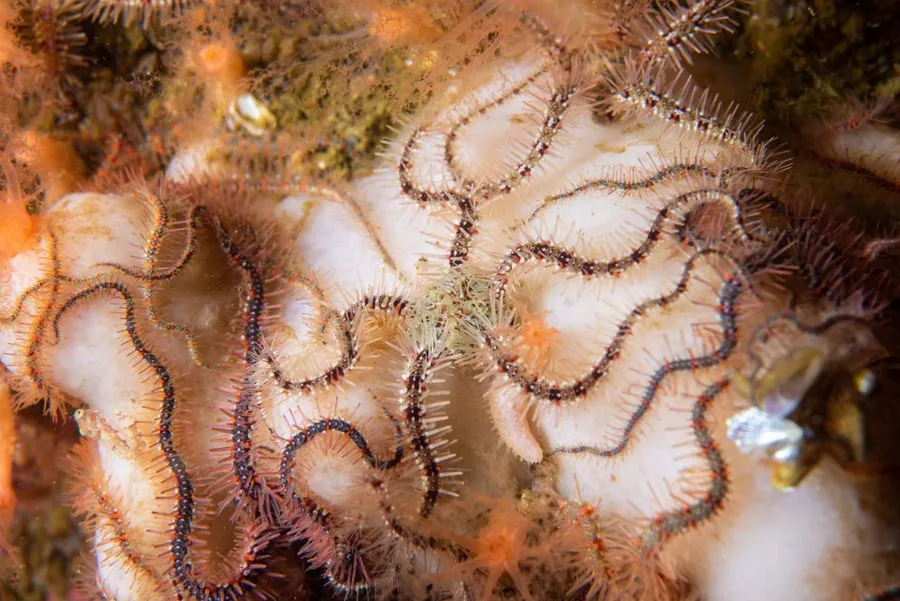

其他无脊椎动物 · 动物界
蛇尾 Ophiothrix fragilis

有 5 条细长腕的海蛇尾，腕上长满小刺，常成群密集聚集在海底滤食，是海洋底栖群落的常见成员。
- 分类
- 门棘皮动物门纲海蛇尾纲目真蛇尾目科刺蛇尾科属刺蛇尾属
- 栖息环境
- 东北大西洋和地中海的岩礁、砾石和泥沙底
- 地理分布
- 东北大西洋和地中海，从挪威到北非沿岸
- 保护级别
- 暂无评估
物种志
蛇尾的身体有一个小小的中央体盘，直径约 1–2 cm，伸出 5 条细长而灵活的腕，腕长可达 10 cm 以上，腕上长满细小带刺的棘，颜色多为灰褐、橙红或紫色，花纹变化多样。它属于海蛇尾纲，与海星是近亲，但腕更细长灵活。
它生活在东北大西洋和地中海的岩礁、砾石和泥沙底，常成群密集聚集，有时密度可达每平方米数百只。蛇尾靠腕上的小刺和管足滤食浮游生物和有机颗粒，也会取食腐肉。它的腕容易断裂，但可以再生，遇到捕食者时会主动断腕逃生。蛇尾是底栖群落的重要成员，为鱼类和蟹类提供食物，也参与有机物的分解和循环。蛇尾的化石记录可以追溯到数亿年前。
形态与习性
- 食性滤食浮游生物和有机颗粒，也吃腐肉
- 体型体盘直径约 1–2 cm，腕长可达 10 cm 以上
- 形态5 条细长腕，腕上长满小刺
- 再生腕易断，断后可以再生
- 习性常成群密集聚集在海底
- 分布东北大西洋和地中海
趣味知识
- 蛇尾的 5 条腕又细又长，动起来像蛇在游动。
- 遇到危险时它会主动断腕逃生，断掉的腕还能长回来。
- 蛇尾常成片聚集在海底，密度高时非常壮观。